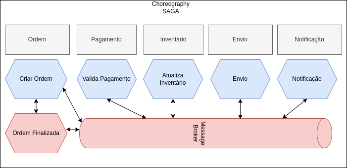
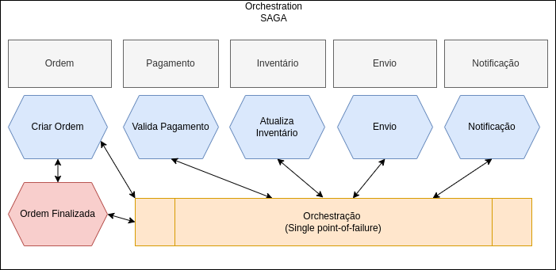
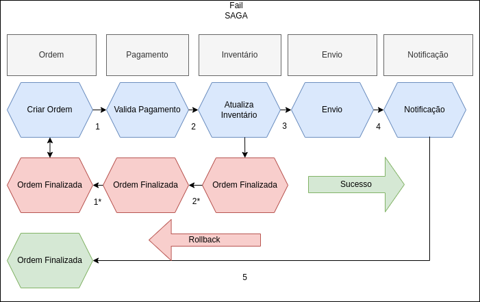

Usando SAGA com AWS Step Function
Palestrante: Rogério Fontes / @rogeriofontes
Sobre o palestrante:
APAIXONADO EM MANEIRAS E FORMAS ÁGEIS DE CRIAR CÓDIGO FONTE. PROGRAMANDO SEMPRE TOMANDO UM BOM CAFÉ E ESCUTANDO UM BELO E PESADO ROCK`N ROLL. TRABALHA A MAIS DE 18 ANOS COM JAVA E LINUX, PASSANDO POR ANDROID, PYTHON, PHP, NODE.JS e GO. PROFESSOR UNIVERSITÁRIO DE REDES DE COMPUTADORES, JAVA E DISPOSITIVOS MÓVEIS. JUGLEADER E CO-FUNDADOR DO UAIJUG (GRUPO DE USUÁRIOS JAVA DO TRIÂNGULO MINEIRO) E DO TRIÂNGULO HACKERSPACE E AGORA DO AWS USER GROUP DO TRIÂNGULO MINEIRO. ARQUITETO ESPECIALISTA JAVA/AWS E ENGENHEIRO DE MORDENIZAÇÃO - NTTDATA/ITAÚ E APAIXONADO POR ESTUDOS MÚSICAIS. 🤟 🎸 🥁
UaiJUG

Triângulo Mineiro:
AWS User Group Triangulo Mineiro
SAGA (ou padrão Saga)
É um padrão de design usado para gerenciar transações ou processos de execução longa que são compostos de várias subtransações.
SAGA significa "Saga State"
Representa uma sequência de transações locais que são coordenadas para atingir um processo de negócios maior e de longa duração.
Padrão SAGA
O padrão garante que todas as subtransações sejam concluídas ou compensadas, de modo que o processo geral seja eventualmente consistente.
Tratamento de falhas
Isso permite que o sistema trate falhas ou erros que possam ocorrer durante a execução do processo.
Transações
Os padrões de saga oferecem a criação de um conjunto de transações que atualizam os microsserviços sequencialmente e publicam eventos para acionar a próxima transação para os próximos microsserviços. Se uma das etapas falhar, os padrões de saga são acionados para transações de reversão, que basicamente fazem operações reversas com a publicação de eventos de reversão para microsserviços anteriores.
Consistência de Dados
O padrão saga é fornecido para gerenciar a consistência de dados entre microsserviços em casos de transações distribuídas e com isso Gerenrenciar Transações Distribuídas entre esses microsserviços.
Princípios do SAGA
Alguns princípios são usados dentro do padrão Saga, como padrão de pub/sub com brokers ou padrões de composição de API.
Princípios do SAGA
O padrão saga fornece gerenciamento de transações usando uma sequência de transações locais de microsserviços. Cada microsserviço possui seu próprio banco de dados e pode gerenciar transações locais de maneira atômica com consistência estrita.
Princípios do SAGA
Saga agrupa essas transações locais e invoca sequencialmente uma a uma. Cada transação local atualiza o banco de dados e publica um evento para acionar a próxima transação local. Se uma das etapas falhar, os padrões saga acionam transações de reversão que são um conjunto de transações de compensação que revertem as alterações nos microsserviços anteriores e restauram a consistência dos dados.
Gerenciamento de transações
Gerenciamento de transações é realmente difícil quando se trata de arquiteturas de microsserviços. Para implementar transações entre vários microsserviços e manter a consistência dos dados, devemos seguir o padrão SAGA. O padrão Saga tem duas abordagens diferentes:
Choreography Saga
É uma variação do padrão Saga que se concentra na coordenação de serviços, em vez da coordenação de transações. Nesse padrão, cada serviço é responsável por manter seu próprio estado e por se comunicar com outros serviços para coordenar a execução do processo geral.
Choreography Saga
A principal diferença entre o Choreography Saga e o padrão tradicional do Saga é que, no Choreography Saga, os serviços se comunicam entre si como pares, em vez de por meio de um coordenador central. Isso permite uma abordagem mais descentralizada e flexível para gerenciar processos de execução longa. Além disso, o Choreography Saga permite tratamento e recuperação de erros mais granulares, pois cada serviço pode lidar com suas próprias falhas e erros.
Choreography Saga
É importante observar que o Choreography Saga não é um padrão padrão e não é um conceito bem definido, é apenas uma maneira de descrever uma abordagem diferente para usar o padrão Saga.
Choreography Saga
Orchestration Saga
É uma variação do padrão Saga que se concentra na coordenação de transações, em vez da coordenação de serviços. Nesse padrão, um coordenador central é responsável por gerenciar todo o processo e coordenar a execução das subtransações. Isso permite uma abordagem mais centralizada e controlada para gerenciar processos de execução longa.
Orchestration Saga
A principal diferença entre o Orchestration Saga e o padrão Saga tradicional é que, no Orchestration Saga, o coordenador é responsável por manter o estado global do processo e por garantir que todas as subtransações sejam concluídas ou compensadas. O coordenador também gerencia a comunicação entre os diferentes serviços envolvidos no processo, sendo responsável pelo tratamento e recuperação de erros.
Orchestration Saga
Assim como no Choreography Saga, é importante observar que Orchestration Saga não é um padrão padrão e não é um conceito bem definido, é apenas uma maneira de descrever uma abordagem diferente para usar o padrão Saga.
Orchestration Saga
SAGA Fail
A Step Function
É uma serviço do AWS que permite definir, executar e monitorar workflows de aplicativos de maneira visual. Ele permite que você modelar processos de negócios e aplicativos de trabalho como uma série de passos gerenciáveis, chamados de "estados".
Para criar uma Step Function, você precisa seguir os seguintes passos:
A Step Function
É uma serviço do AWS que permite definir, executar e monitorar workflows de aplicativos de maneira visual. Ele permite que você modelar processos de negócios e aplicativos de trabalho como uma série de passos gerenciáveis, chamados de "estados".
Para escrever um aplicativo simples para criar uma ordem de pagamento usando uma máquina de estado, você precisará seguir estas etapas gerais:
Exemplo de workflow
Exemplo de uma máquina de estado simples do AWS Step Functions escrita na Amazon States Language (ASL), que define uma máquina de estado que cria uma ordem de pagamento:
Exemplo de workflow
Criado pelo ChatGPT
{
"Comment": "Create Payment Order State Machine",
"StartAt": "Order Created",
"States": {
"Order Created": {
"Type": "Task",
"Resource": "arn:aws:lambda:us-west-2:1234567890:function:createOrder",
"Next": "Payment Initialized"
},
"Payment Initialized": {
"Type": "Task",
"Resource": "arn:aws:lambda:us-west-2:1234567890:function:initializePayment",
"Next": "Payment Confirmed"
},
"Payment Confirmed": {
"Type": "Task",
"Resource": "arn:aws:lambda:us-west-2:1234567890:function:confirmPayment",
"Next": "Order Confirmed"
},
"Order Confirmed": {
"Type": "Task",
"Resource": "arn:aws:lambda:us-west-2:1234567890:function:confirmOrder",
"End": true
}
}
}